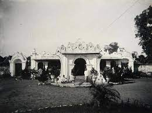

Sejarah

Mengawali cerita sejarah ini sebagai Purwadaksina, Purwa Kawitan
Daksina Kawekasan, tersebutlah kerajaan besar di kawasan barat pulau
Jawa Pakuan Pajajaran yang Gemah Ripah Repeh Rapih Loh Jinawi Subur
Kang Sarwa Tinandur Murah Kang Sarwa Tinuku, Kaloka Murah Sandang
Pangan Lan Aman Tentrem Kawontenanipun. Dengan Rajanya Jaya Dewata
bergelar Sri Baduga Maharaja Prabu Siliwangi Raja Agung, Punjuling
Papak, Ugi Sakti Madraguna, Teguh Totosane Bojona Kulit Mboten Tedas
Tapak Paluneng Pande, Dihormati, disanjung Puja rakyatnya dan
disegani oleh lawan-lawannya.
Raja Jaya Dewata menikah dengan Nyai Subang Larang dikarunia 2 (dua)
orang putra dan seorang putri, Pangeran Walangsungsang yang lahir
pertama tahun 1423 Masehi, kedua Nyai Lara Santang lahir tahun 1426
Masehi. Sedangkan Putra yang ketiga Raja Sengara lahir tahun 1428
Masehi. Pada tahun 1442 Masehi Pangeran Walangsungsang menikah
dengan Nyai Endang Geulis Putri Ki Gedheng Danu Warsih dari
Pertapaan Gunung Mara Api.
Mereka singgah di beberapa petapaan antara lain petapaan Ciangkup di
Desa Panongan (Sedong), Petapaan Gunung Kumbang di daerah Tegal dan
Petapaan Gunung Cangak di Desa Mundu Mesigit, yang terakhir sampe ke
Gunung Amparan Jati dan disanalah bertemu dengan Syekh Datuk Kahfi
yang berasal dari kerajaan Parsi. Ia adalah seorang Guru Agama Islam
yang luhur ilmu dan budi pekertinya.
Pangeran Walangsungsang beserta adiknya Nyai Lara Santang dan
istrinya Nyai Endang Geulis berguru Agama Islam kepada Syekh Nur
Jati dan menetap bersama Ki Gedheng Danusela adik Ki Gedheng
Danuwarsih. Oleh Syekh Nur Jati, Pangeran Walangsungsang diberi
nama Somadullah dan diminta untuk membuka hutan di pinggir Pantai
Sebelah Tenggara Gunung Jati (Lemahwungkuk sekarang). Maka sejak
itu berdirilah Dukuh Tegal Alang-Alang yang kemudian diberi nama
Desa Caruban (Campuran) yang semakin lama menjadi ramai dikunjungi
dan dihuni oleh berbagai suku bangsa untuk berdagang, bertani dan
mencari ikan di laut.
Danusela (Ki Gedheng Alang-Alang) oleh masyarakat dipilih sebagai
Kuwu yang pertama dan setelah meninggal pada tahun 1447 Masehi
digantikan oleh Pangeran Walangsungsang sebagai Kuwu Carbon yang
kedua bergelar Pangeran Cakrabuana. Atas petunjuk Syekh Nur Jati,
Pangeran Walangsungsang dan Nyai Lara Santang menunaikan ibadah
haji ke Tanah Suci Mekah.
Pangeran Walangsungsang mendapat gelar Haji Abdullah Iman dan
adiknya Nyai Lara Santang mendapat gelar Hajah Sarifah Mudaim,
kemudian menikah dengan seorang Raja Mesir bernama Syarif Abullah.
Dari hasil perkawinannya dikaruniai 2 (dua) orang putra, yaitu
Syarif Hidayatullah dan Syarif Nurullah. Sekembalinya dari Mekah,
Pangeran Cakrabuana mendirikan Tajug dan Rumah Besar yang diberi
nama Jelagrahan, yang kemudian dikembangkan menjadi Keraton
Pakungwati (Keraton Kasepuhan sekarang) sebagai tempat kediaman
bersama Putri Kinasih Nyai Pakungwati. Stelah Kakek Pangeran
Cakrabuana Jumajan Jati Wafat, maka Keratuan di Singapura tidak
dilanjutkan (Singapura terletak + 14 Km sebelah Utara Pesarean
Sunan Gunung Jati) tetapi harta peninggalannya digunakan untuk
bangunan Keraton Pakungwati dan juga membentuk prajurit dengan
nama Dalem Agung Nyi Mas Pakungwati. Prabu Siliwangi melalui
utusannya, Tumenggung Jagabaya dan Raja Sengara (adik Pangeran
Walangsungsang), mengakat Pangeran Carkrabuana menjadi Tumenggung
dengan Gelar Sri Mangana.
Pada Tahun 1470 Masehi Syarif Hiyatullah setelah berguru di Mekah,
Bagdad, Campa dan Samudra Pasai, datang ke Pulau Jawa, mula-mula
tiba di Banten kemudian Jawa Timur dan mendapat kesempatan untuk
bermusyawarah dengan para wali yang dipimpin oleh Sunan Ampel.
Musyawarah tersebut menghasilkansuatu lembaga yang bergerak dalam
penyebaran Agama Islam di Pulau Jawa dengan nama Wali Sanga.
Sebagai anggota dari lembaga tersebut, Syarif Hidayatullah datang
ke Carbon untuk menemui Uwaknya, Tumenggung Sri Mangana (Pangeran
Walangsungsang) untuk mengajarkan Agama Islam di daerah Carbon dan
sekitarnya, maka didirikanlah sebuah padepokan yang disebut
pekikiran (di Gunung Sembung sekarang)
Setelah Suna Ampel wafat tahun 1478 Masehi, maka dalam musyawarah
Wali Sanga di Tuban, Syarif Hidayatullah ditunjuk untuk
menggantikan pimpinan Wali Sanga. Akhirnya pusat kegiatan Wali
Sanga dipindahkan dari Tuban ke Gunung Sembung di Carbon yang
kemudian disebut puser bumi sebagai pusat kegiatan keagamaan,
sedangkan sebagai pusat pemerintahan Kesulatan Cirebon
berkedudukan di Keraton Pakungwati dengan sebutan GERAGE. Pada
Tahun 1479 Masehi, Syarif Hidayatullah yang lebih kondang dengan
sebutan Pangeran Sunan Gunung Jati menikah dengan Nyi Mas
Pakungwati Putri Pangeran Cakrabuana dari Nyai Mas Endang Geulis.
Sejak saat itu Pangeran Syarif Hidayatullah dinobatkan sebagai
Sultan Carbon I dan menetap di Keraton Pakungwati.
Sebagaimana lazimnya yang selalu dilakukan oleh Pangeran
Cakrabuana mengirim upeti ke Pakuan Pajajaran, maka pada tahun
1482 Masehi setelah Syarif Hidayatullah diangkat menajdi Sulatan
Carbon membuat maklumat kepada Raja Pakuan Pajajaran PRABU
SILIWANGI untuk tidak mengirim upeti lagi karena Kesultanan
Cirebon sudah menjadi Negara yang Merdeka. Selain hal tersebut
Pangeran Syarif Hidayatullah melalui lembaga Wali Sanga rela
berulangkali memohon Raja Pajajaran untuk berkenan memeluk Agama
Islam tetapi tidak berhasil. Itulah penyebab yang utama mengapa
Pangeran Syarif Hidayatullah menyatakan Cirebon sebagai Negara
Merdeka lepas dari kekuasaan Pakuan Pajajaran.
Peristiwa merdekanya Cirebon keluar dari kekuasaan Pajajaran
tersebut, dicatat dalam sejarah tanggal Dwa Dasi Sukla Pakca Cetra
Masa Sahasra Patangatus Papat Ikang Sakakala, bertepatan dengan 12
Shafar 887 Hijiriah atau 2 April 1482 Masehi yang sekarang
diperingati sebagai hari jadi Kabupaten Cirebon
...more